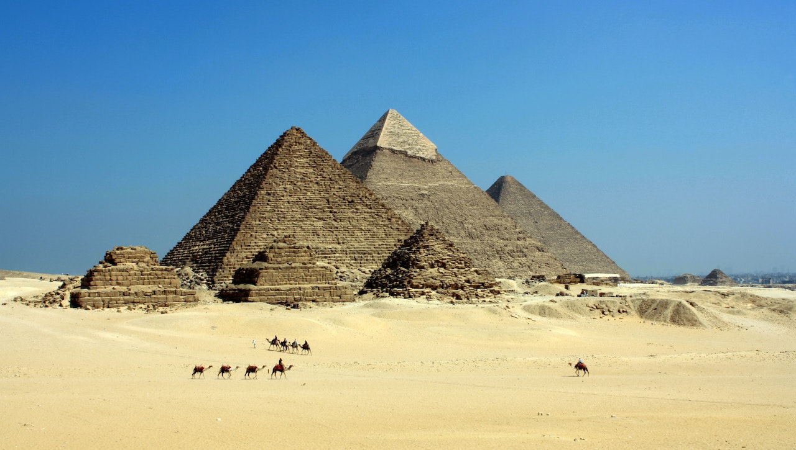
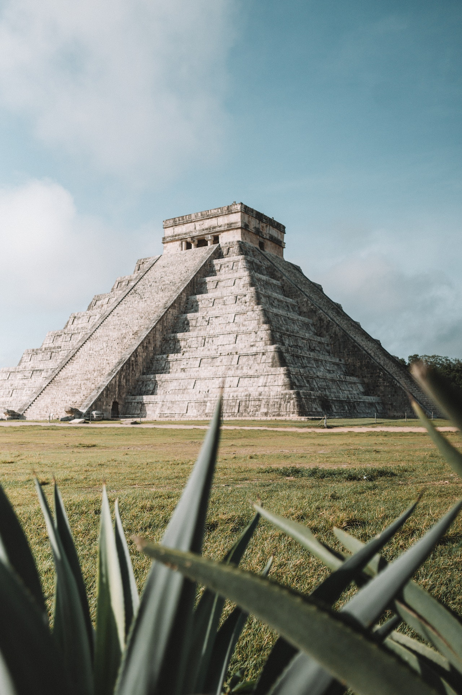
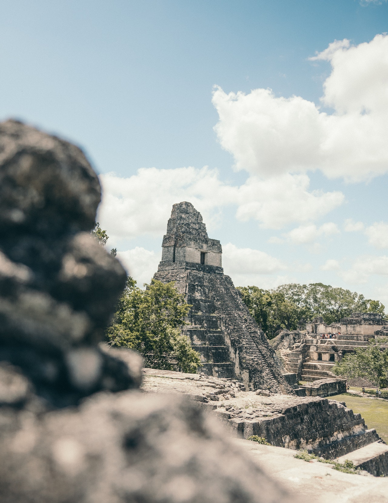
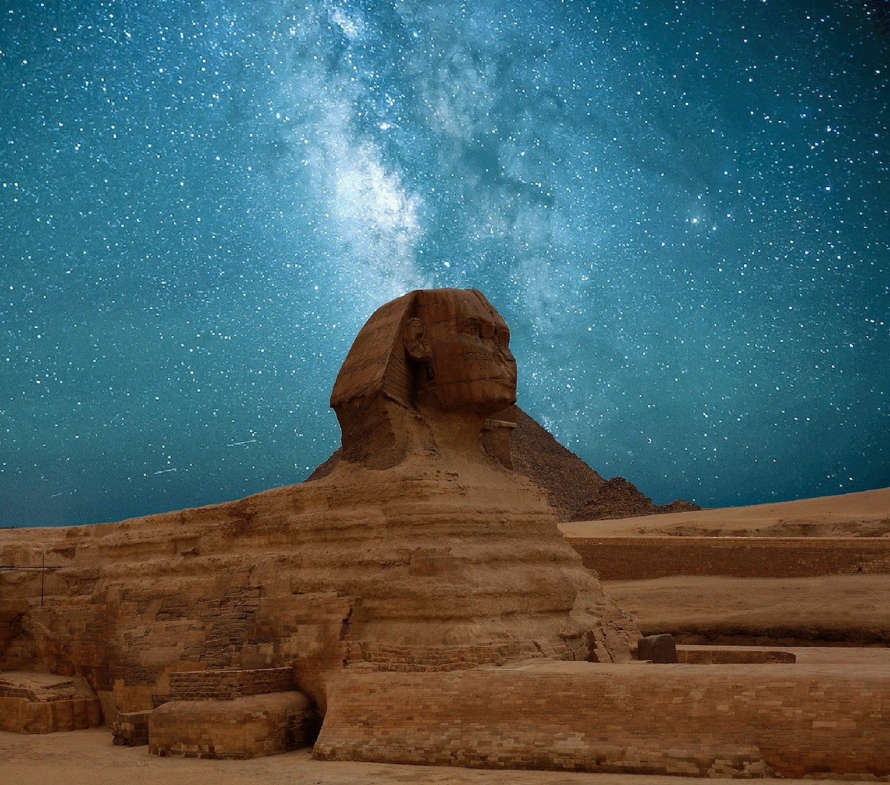

Uncover the Age-Old Mysteries

The true origin of the pyramids?

The significance of their locations?

The link to the gods?

The connection to the cosmos?
From the heights of these pyramids, forty centuries look down on us.
It's time to explore!
Sign up for our once-in-a-lifetime program now!